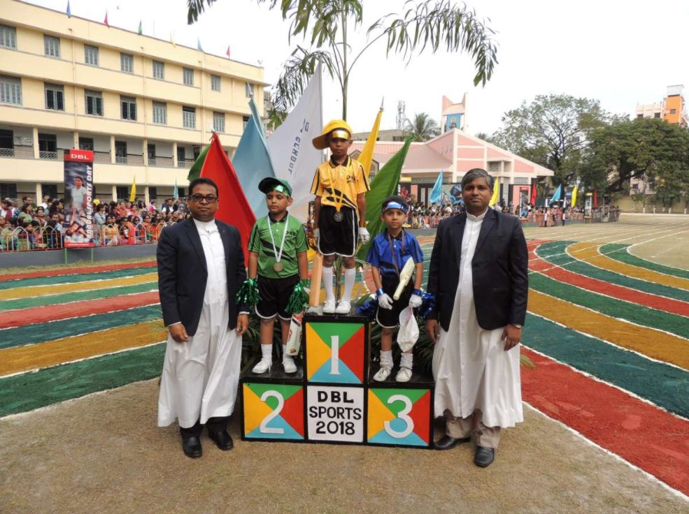
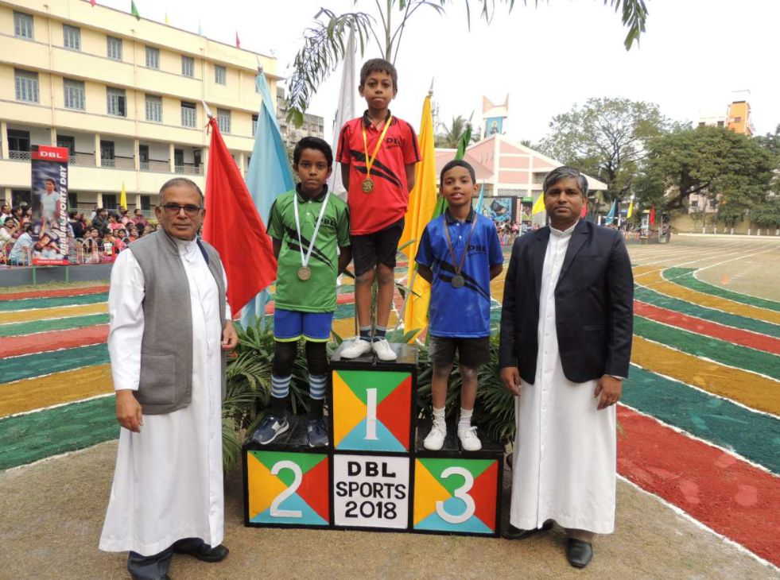
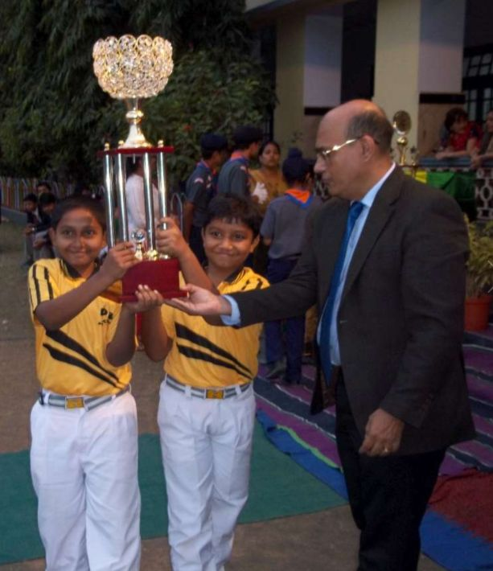
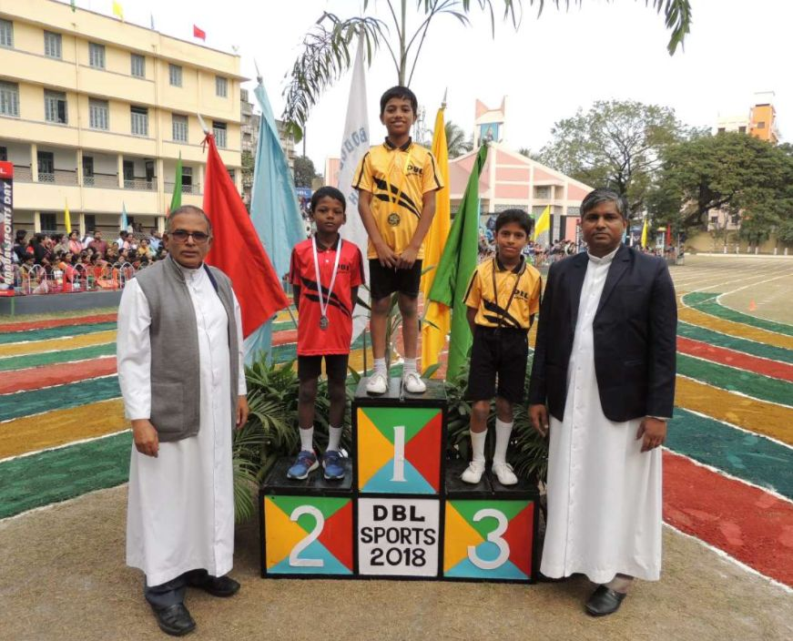
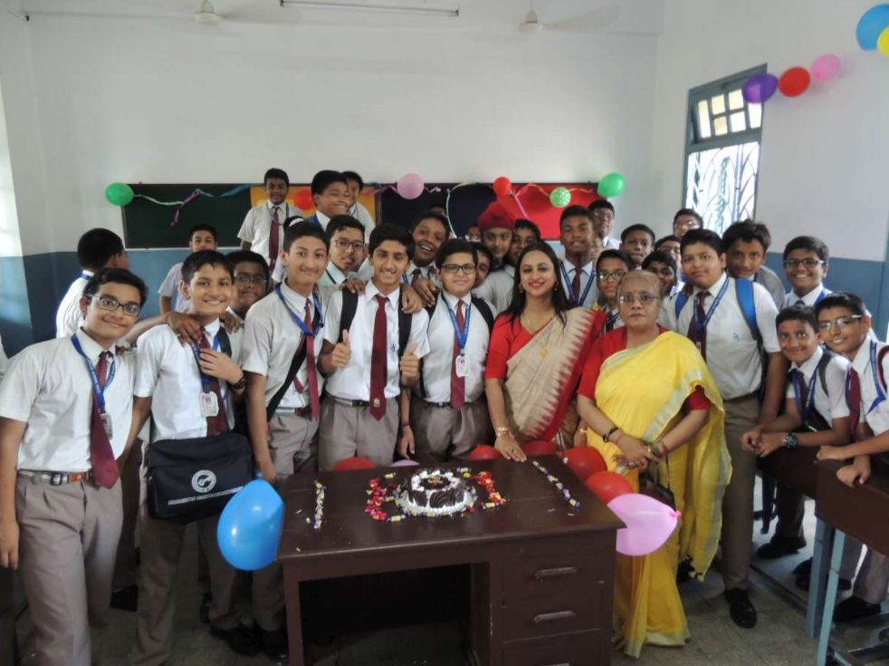
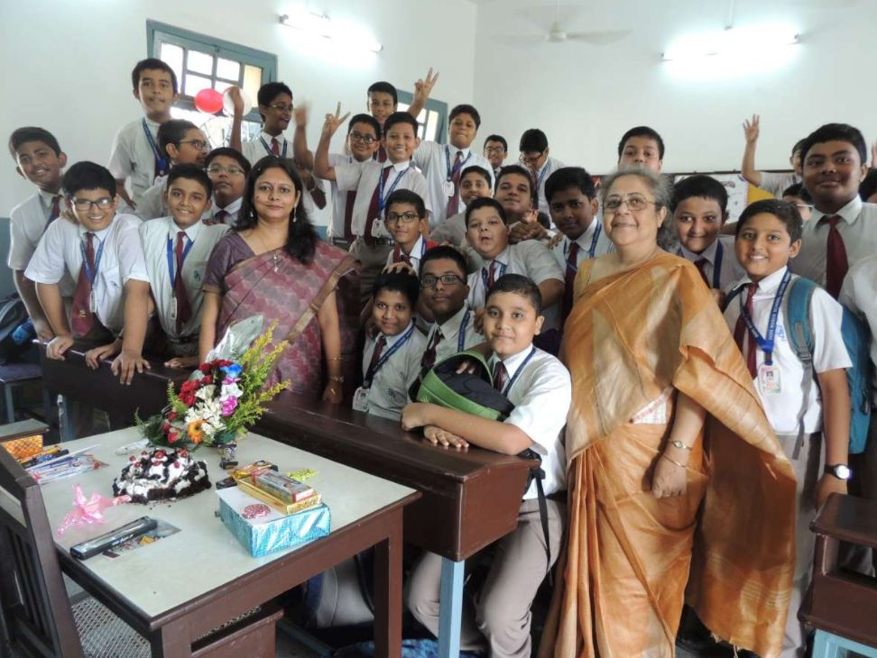
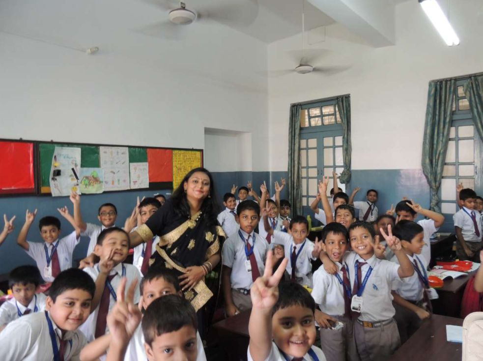
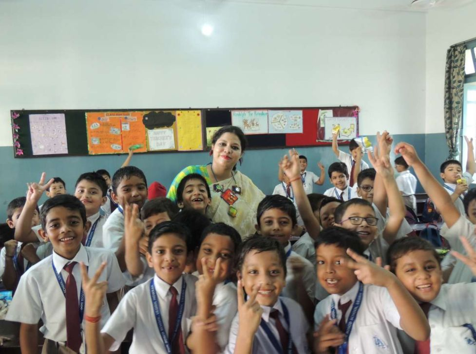

Don Bosco School Liluah is an all-boys, English medium school located in the city of Howrah, India. It operates under the Council for the Indian School Certificate Examinations and takes students from the lower kindergarten through grade twelve. The school was established in 1937, and is run by the Salesians of Don Bosco S.D.B. which is a minority institution within the Catholic Church. The patron saint of the school is St. John Bosco, popularly known as Don Bosco. The motto of the school is "Virtus et Labor". The school celebrated its Platinum Jubilee in December 2012.








Greetings everyone. Hope you all are in sound health in the pandemic situation. It is very important to stay safe and healthy these days. Students are supposed to be attending their regular online classes. Thank you!